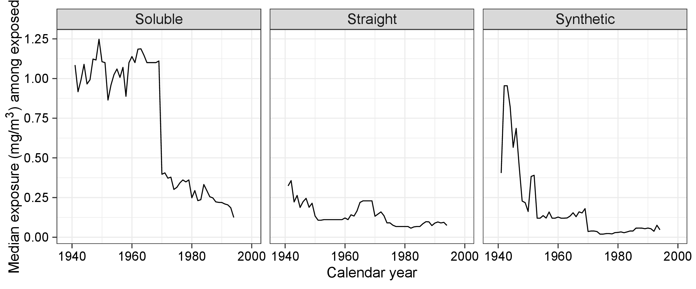

Type of manuscript: Original Research Article
Manuscript title: Hypothetical limits on workplace exposure for reducing non-Hodgkin lymphoma: An application of the hazard-extended iterative conditional expectation parametric g-formula
Authors: Kevin T. Chena,b,c, Sally Picciottob, Ellen A. Eisenb
a University of California, Berkeley School of Public Health, Division of Epidemiology & Biostatistics
b University of California, Berkeley School of Public Health, Division of Environmental Health Sciences
c University of California, Berkeley Department of Statistics
Corresponding author:
Kevin T. Chen
2121 Berkeley Way
Room 5302, Desk 5305-1
Berkeley, CA 94720-7360
kevchen@berkeley.edu
(510) 387-3327
Running head suggestion: Limits on metalworking fluid exposure to prevent NHL.
Conflicts of interests: Authors declare no conflicts of interest.
Sources of financial support: This work was supported by Training Grant T42OH008429 and Research Project Grant R01OH011092, both funded by the National Institute for Occupational Safety and Health (NIOSH) / Centers for Disease Control and Prevention (CDC).
Data and computing code: Code for reproducing analyses and reports are available on Github. Data are available upon reasonable request.
Keywords: Metalworking fluid, occupational exposure, non-Hodgkin lymphoma, cancer, causal inference, g-formula, healthy-worker effect, United States
Abstract
(Limit: 250 words)
Background: Non-Hodgkin lymphoma (NHL) incidence has increased substantially in the US since 1960 and was recently linked to workplace exposure to soluble metalworking fluids (MWF) in a standard survival analysis of the United Auto Workers-General Motors (UAW-GM) cohort. To further explore this association, we investigate the causal effects of hypothetical limits on soluble MWF exposure in relation to NHL risk in the same cohort of autoworkers.
Methods: We estimated counterfactual risk of NHL between 1985 and 2005 in the UAW-GM cohort of autoworkers at three Michigan plants (n = 34,734) under hypothetical limits on annual average daily exposure to soluble MWF. We applied the hazard-extended ICE parametric g-formula, an estimator capable of adjusting for time-varying confounding affected by past exposure.
Results: During follow-up, 231 NHL cases occurred. Stronger hypothetical limits on soluble MWF exposure resulted in monotonic reductions in NHL risk estimates. Capping annual average daily exposure at 0.5 mg/m3, the NIOSH recommended exposure limit, would have prevented 44 (95% CI: -6, 91) cases. Capping at 0.25 mg/m3 would have prevented 52 (95% CI: -5, 106) cases. Finally, capping at 0.05 mg/m3 would have prevented 71 (95% CI: 12, 129) cases.
Conclusion: Stronger limits on soluble MWF exposure would have prevented cases of NHL in the UAW-GM cohort. Our application demonstrates the utility of an ICE g-formula estimator for estimating the effect of realistic exposure interventions on a survival outcome. Greater availability of worked examples and software would facilitate wider application of ICE g-formula estimators.
Introduction
The parametric g-formula has become increasingly popular among epidemiologists in the last decade. This analytic approach is attractive in part because it allows investigators to estimate the population-level effect of realistic interventions on exposures that may depend on individuals’ covariate history as well as their natural value of exposure. In addition to yielding estimates with a population-level interpretation, the parametric g-formula is also capable of adjusting for time-varying confounding possibly affected by past exposure in longitudinal settings, which is not possible with standard regression methods. In their seminal 2009 paper, Taubman et alia describe the parametric g-formula and illustrate its application in the estimation of the counterfactual risks under several interventions in the Nurses’ Health Study.1 They introduced a non-iterative conditional expectation parametric g-formula that requires parametric specification of the full joint distribution of confounders, exposures, and outcomes over time.
Full parameterization is an attractive choice for investigators seeking to embed real causal knowledge into the estimation problem. For those who are not completely comfortable with the full set of parametric assumptions, the iterative conditional expectation (ICE) parametric g-formula may be a good alternative. The ICE g-formula was introduced as early as 2004,2 but its parametric implementations remain far less common in practice than its non-ICE counterpart. Like the non-ICE parametric g-formula, the ICE expression enables adjustment for time-varying confounding possibly affected by past exposure. However, the ICE parametric g-formula requires the parametric specification of models for the outcome only, and not the confounders or exposure. Hence, it requires fewer parametric assumptions than the non-ICE parametric g-formula. Furthermore, the elegance of the ICE parametric g-formula allows analysts to implement the method using standard statistical software, which offers the prospect of greater interpretability and transparency than using “black box” implementations.
Here, we describe the hazard-extended ICE parametric g-formula, an extension of the ICE parametric g-formula for causal survival analyses, and apply it to estimate counterfactual cumulative incidences of non-Hodgkin lymphoma under hypothetical interventions on annual average daily exposure to soluble metalworking fluids (MWF) in the UAW-GM autoworkers cohort between 1984 and 2005. The interventions we evaluate are modified longitudinal treatment policies which depend on the natural value of exposure.1,3–6
Methods
We estimated NHL cumulative incidence from 1985 to 2005 under hypothetical limits on annual average daily exposure to soluble MWF by applying the hazard-extended iterative conditional expectation (ICE) parametric g-formula estimator.7 We leveraged time-varying quantitative MWF exposure data in tandem with employment records to adjust for the HWSE. First, we estimated the expected number of NHL cases that we would observe if there were no censoring by competing risks. Then, we contrasted this counterfactual cumulative incidence to that under three the hypothetical exposure limits: (1) the National Institute for Occupational Safety and Health (NIOSH) Recommended Exposure Limit (REL) for total particulate mass (PM) composed of MWFs (0.5 mg/m3), (2) half the REL (0.25 mg/m3), and (3) a tenth of the REL (0.05 mg/m3) were enforced for soluble MWF over workers’ entire working lifetimes.8 Under these hypothetical interventions, exposure was set at the hypothetical limit if observed exposure was greater than that limit. Otherwise, exposure was not intervened upon.
Study population
The UAW-GM cohort includes all hourly workers at three automobile manufacturing plants in Michigan who had worked at least three years by 1985. Past papers provide detailed descriptions of the cohort.9,10 The large size of the study population and rich time-varying, quantitative MWF exposure data provide an opportunity to study a relatively rare cancer and evaluate realistic interventions on MWF exposure in a longitudinal cohort setting. The present study population (N = 34,738) was restricted to the autoworkers who were at work in 1941 or not yet hired, missing no more than half of their employment history, and still alive at the start of follow-up. Autoworkers in the study population were followed for NHL incidence from January 1, 1985 until NHL diagnosis, death, January 1, 2005 (10 years after the end of employment record availability), or age 108 years (the oldest observed age at death), whichever came earlier.
Outcome and covariates
We identified incident cancers in the UAW-GM cohort that occurred between 1985 and 2005 by linkage to the Michigan Cancer Registry (MCR). Workers at Plants 1 and 2, located in the greater Detroit metropolitan area, were also linked to the Detroit Regional Registry of the Surveillance, Epidemiology, and End Results (SEER) Program. Cancer types were distinguished using site and histology codes conforming to the International classification of Diseases for Oncology, 3rd edition (ICD-O-3). Non-Hodgkin lymphoma was defined by cancers with any of the following ICD-O-3 Histology codes: 9590-9597, 9670-9671, 9673, 9675, 9678-9680, 9684, 9687-9691, 9695, 9698-9702, 9705, 9708-9709, 9712, 9714-9719, 9724-9729, 9735, 9737-9738, 9811-9818, 9823, 9827, 9837. Details regarding cancer incidence follow-up are described elsewhere.11 Vital status was ascertained from company records and by linkage to Social Security Administration, National Death Index, and state mortality files.
Covariates including year of hire, sex, race, and plant location were obtained from company records. Race was missing for about 16% of the cohort, most commonly among workers hired before 1960 in Plant 2. In analyses, missing race was considered a distinct category. All covariates were coded as categorical variables. Cut-points for categorizing continuous covariates were determined according to the quantiles among cases.
Exposure
Quantitative measurement of time-varying MWF exposure is a distinguishing strength of the UAW-GM cohort study relative to other occupational cohort studies. Exposure assessment was based on direct air sampling as well as company records. Company industrial hygienists collected several hundred personal and area samples for total particulate matter (mg/m3) composed of MWF over many decades. Research industrial hygienists collected additional air sampling data when the cohort study was launched in the mid 1980s. These additional data were combined with the historical data and company records to construct a job-exposure matrix of quantitative 8-hour time-weighted average daily exposure estimates to soluble, straight, and synthetic MWFs for each combination of job, department, and plant over time. Workers’ time-weighted annual average daily exposure to each MWF type was determined by combining this job-exposure matrix with employment records, which recorded time-varying job type, department, and plant for each employee from hire to termination or 1994, whichever came sooner. For employment records that were at least half complete, gaps in the record were interpolated by carrying forward the last known job type. The exposure assessment is described in detail elsewhere.12–14 Previous analyses of NHL applied exposure lags of 1 to 20 years to account for disease latency; we lagged cumulative MWF exposures by 10 years and therefore ended follow-up on January 1, 2005.15–17 In analyses, MWF exposure history was summarized as the cumulative sum of annual exposure intensities and coded as categorical variables with cut-points determined according the quantiles of cumulative exposure among cases. In analyses, we estimated the effects of interventions on soluble MWF while treating exposure to straight and synthetic MWFs as potential confounders.
Statistical methods
The hazard-extended ICE parametric g-formula may be thought of as a series of model-based standardization steps, which we implemented using logistic regression. We split the 20-year follow-up period into eight time periods; the first two periods spanned four years each, and the remaining six periods spanned two years each. The first two periods are longer in length to account for the smaller number of cases in those years. Post-intervention estimates of the discrete hazard of NHL given all exposures and covariates were combined iteratively from the end of follow-up to the start. In each iteration, predicted discrete hazards were standardized over post-intervention exposure and covariate histories before combining with discrete hazards from the previous iteration. This iterative process results in sequentially standardized estimates of NHL cumulative incidence over the entire follow-up period. Averaging over the baseline distribution of covariates yields the counterfactual cumulative incidence estimate of NHL if the intervention of interest were enforced for the entire study population.
Post-intervention exposure to soluble MWF and history of exposure to soluble MWF were summarized as cumulative exposure. We modeled discrete hazards by fitting a pooled logistic regression for NHL over at-risk person-periods given cumulative exposure to straight, soluble, and synthetic MWFs, employment status, cumulative time off, year of hire, sex (male/female), race (Black/white/unknown), and plant (Plant 1/Plant 2/Plant 3). Cumulative exposure to MWFs, employment status, and cumulative time off were lagged 10 years. All continuous variables were represented as categorical variables with cut points determined by the tertiles of nonzero values among NHL cases. An overview of the general steps of the estimation procedure are presented below.
For the hypothetical exposure limit of interest, compute the cumulative exposure to soluble MWF that each worker would have accrued by the end of each follow-up period since hire.
Fit a pooled logistic regression to the observed data for NHL on covariates and cumulative exposure to soluble MWF over all at-risk person-periods, excluding those ending with a .
Replace the cumulative exposure vector in the observed data with the vector of post-intervention cumulative exposure to soluble MWF. Using the model fitted in the previous step, compute estimates of the post-intervention discrete hazard for each at-risk person-period including those that end with a censoring event.
Set \(k = K - 1\) where \(K = 8\) is the number of follow-up periods:
- Among those who were event-free and uncensored through the \(k\)th period, fit a logistic regression on the predicted post-intervention discrete hazard for the period spanning the \((k + 1)\) through \(K\)th periods given observed covariate and exposure history up through (and including) the \(k\)th period.
- Replace the vector of cumulative exposure to soluble MWF in the observed data with the post-intervention vector of cumulative exposure to soluble MWF. Using the model fitted in the previous step, obtain predicted values for all those who were at-risk in the \(k\)th period.
- Compute the predicted post-intervention discrete hazard for the period spanning the \(k\) through \(K\)th periods by multiplying the predicted values from the previous step by 1 minus the discrete hazard estimate used to fit the model in step 3.a and adding that same discrete hazard estimate to the product.
- If \(k > 1\), set \(k = k - 1\) and return to step 3.a.
Compute the counterfactual risk by averaging the predicted post-intervention discrete hazards for the entire follow-up period for all units.
We estimated cumulative incidence under the observed distribution of soluble MWF exposure (natural course) and under the six interventions. We contrasted the cumulative incidence under intervention to that under the natural course by computing relative cumulative incidences. Confidence intervals were computed using the nonparametric bootstrap with 1000 Monte Carlo samples from the population at cumulative incidence at start of follow-up and centering on the estimate computed from observed data. All the necessary script used to reproduce the analyses are available on GitHub.
Results
Table 1 presents summary statistics of exposure and covariates for the full study population and for those diagnosed with NHL between 1985 and 2005. The cohort is predominantly white (66%) and male (87%). The median year of hire among those diagnosed with NHL was 1959 whereas the median year of hire in the full study population was almost a decade later. Age at hire was approximately the same among those with NHL and the full study population. Median lagged cumulative exposure to all three MWF types was higher among NHL cases. Soluble MWFs were the most widely used MWF type, with approximately 90% of workers ever exposed. Median cumulative exposure among the exposed was 6.5 times higher for soluble than for straight MWFs. Figure 1 shows median annual average daily exposure to the three MWF types among exposed workers over calendar time. Exposure to MWF generally followed a downward trend over time.
Study population | NHL cases | ||||
|---|---|---|---|---|---|
N (person-years) | 34,734 | (596,698) | 231 | (2,777) | |
Race | |||||
White | 22,789 | (66%) | 173 | (75%) | |
Black | 6,304 | (18%) | 21 | (9%) | |
Unknown | 5,641 | (16%) | 37 | (16%) | |
Sex | |||||
Male | 30,235 | (87%) | 206 | (89%) | |
Female | 4,499 | (13%) | 25 | (11%) | |
Planta | |||||
Plant 1 | 8,721 | (25%) | 68 | (29%) | |
Plant 2 | 14,258 | (41%) | 90 | (39%) | |
Plant 3 | 11,755 | (34%) | 73 | (32%) | |
Ever exposed to MWFsb | |||||
Soluble | 31,044 | (89%) | 210 | (91%) | |
Straight | 19,905 | (57%) | 133 | (58%) | |
Synthetic | 12,262 | (35%) | 72 | (31%) | |
Deceased by end of follow-up | 10,384 | (30%) | 33 | (14%) | |
Year of birth | 1940 | (1925, 1950) | 1929 | (1919, 1940) | |
Year of hire | 1967 | (1953, 1976) | 1959 | (1951, 1969) | |
Age at hire (years) | 23.6 | (20.0, 30.1) | 25.4 | (21.1, 33.6) | |
Year of leaving workc | 1979 | (1968, 1989) | 1977 | (1964, 1987) | |
Age at leaving work (years)c | 45.0 | (31.9, 57.7) | 53.4 | (36.5, 61.2) | |
Years at workc | 15.3 | (7.3, 27.1) | 19.2 | (8.0, 29.9) | |
Year of death | 2000 | (1993, 2008) | 2001 | (1994, 2005) | |
Age at death (years) | 74.7 | (65.3, 82.5) | 73.8 | (66.2, 82.0) | |
Cumulative time off (years)b | 1.07 | (0.33, 1.87) | 0.68 | (0.17, 1.43) | |
Cumulative exposure to MWFs (mg/m3-years)d | |||||
Soluble | 4.65 | (1.85, 12.13) | 7.16 | (2.86, 20.91) | |
Straight | 0.70 | (0.22, 2.56) | 0.93 | (0.29, 3.30) | |
Synthetic | 0.45 | (0.16, 1.64) | 0.89 | (0.29, 2.11) | |
NHL: non-Hodgkin lymphoma. | |||||
a Plant of longest employment duration among those who worked at multiple plants; b Lagged 10 years; c Among those who left work by December 31, 1994; d Among ever-exposed individuals, lagged 10 years.; | |||||

The observed number of NHL cases over the 20-year follow-up period was 231 (corresponding to a 20-year risk of 6.65 per 1000). Table 2 presents the hazard-extended ICE parametric g-formula estimates of the counterfactual number of cases, number of cases averted, and cumulative incidence ratios contrasting hypothetical limits on exposure to soluble MWF to no limit, after elimination of competing risks. Under an intervention eliminating competing risks, the estimated number of cases under no limit on MWF exposure was 332 (285, 380). Stronger limits on annual average daily exposure to soluble MWFs resulted in monotonically stronger reductions in the cumulative incidence of NHL. Capping annual average daily exposure to soluble MWFs at 0.5 mg/m3, 0.25 mg/m3, and 0.05 mg/m3 resulted in 44 (-6, 91), 52 (-5, 106), and 71 (12, 129) fewer NHL cases, respectively. These correspond to cumulative incidence ratios 0.87 (0.73, 1.02), 0.84 (0.68, 1.01), and 0.79 (0.61, 0.97).
Exposure limit for soluble MWF (mg/m3) | Person-years intervened (%) | Cases | (95% CI) | Cases averted | (95% CI) | CIR | (95% CI) |
|---|---|---|---|---|---|---|---|
None | 0.0 | 332 | (285, 380) | ||||
0.5 | 23.8 | 288 | (224, 351) | 44 | (-6, 91) | 0.87 | (0.73, 1.02) |
0.25 | 36.2 | 280 | (209, 348) | 52 | (-5, 106) | 0.84 | (0.68, 1.01) |
0.05 | 43.9 | 261 | (193, 325) | 71 | (12, 129) | 0.79 | (0.61, 0.96) |
CIR: cumulative incidence ratio. MWF: metalworking fluid | |||||||
Discussion
Although NIOSH concluded that there exists substantial evidence linking MWF exposure to several different cancers, their REL of 0.5 mg/m3 for total particulate matter derived from any type of MWF targeted risk of acute respiratory disorders rather than on cancer.8,18 Hence, they may be inadequate for protecting against cancer risk. Using the hazard-extended ICE parametric g-formula, We estimated the counterfactual expected number of NHL cases from 1985 to 2005 in the UAW-GM cohort if annual average daily exposure to soluble MWF were limited to the NIOSH REL, half the REL, and a tenth of the REL and found a monotonic exposure-dependent relationship with lower cumulative incidence estimates arising from stronger limits.
The g-formula is a well-known approach in causal inference used for the identification of causal effects in the presence of time-varying confounding affected by past exposure.19 Standard representations of the g-formula include (1) a non-iterated expectation over the joint density of covariates, (2) the ICE over time, and (3) an inverse probability weighted expectation. The parametric g-formula is a plug in estimator for the g-formula under its first, non-iterative, representation. It involves the parametric modeling of the full joint distribution of the outcome, exposure, and covariates under study for each time point.1,5 Counterfactual quantities under hypothetical interventions of interest are computed from Monte Carlo samples from distributions implied by the fitted parametric models. In longitudinal settings, this approach often requires specifying and fitting large number of models in order to satisfy the exchangeability assumptions necessary for causal identification.
Parametric estimators using the ICE representation of the g-formula require modeling only the conditional outcome distributions, so they require fewer parametric assumptions than non-iterative parametric g-formula estimators. Counterfactual outcome estimates over the follow-up period are computed from interval-specific conditional estimates by applying the tower rule of expectation. Under the assumptions of conditional exchangeability at all time points, positivity, counterfactual consistency, and correct model specification, the hazard-extended parametric g-formula yields unbiased estimates of counterfactual risk with greater statistical efficiency than both propensity score-based estimators and the classical ICE g-formula.
Under the assumptions of conditional exchangeability, positivity, consistency, and correct model specification, our estimates are unbiased for the true counterfactual risk under the hypothetical interventions. Conditional exchangeability means that for all time points, there is no confounding of the relationship between exposure/censoring and both future exposure/censoring and NHL status given the observed past, including past exposure and covariates.3,6 A major threat to conditional exchangeability in longitudinal occupational studies is the HWSE. We limit potential bias due to the HWSE by conditioning on cumulative exposure, employment status, and cumulative time off history at each time point. Cumulative time off and employment status are reasonable mediators of the causal paths linking past health to future exposure and health, but adjustment for these variables may not be sufficient for eliminating bias due to the HWSE. Declines in a worker’s health may lead to reductions in work-related exposure without affecting employment status or time off work.20 We expect the absence of time-varying measures of worker health over the life course to result in bias toward the null.
Positivity refers to the need for adequate variation in future exposure among strata formed by observed covariate and intervention-compliant exposure histories. Even under conditional exchangeability, where exposures within these strata may be considered the result of experimental assignment, expected counterfactual outcomes under different exposures may not be estimable if there is excessive sparsity in the observed distribution of exposures.21 We investigated static and dynamic stochastic interventions on soluble MWF exposure that intervened only when annual average daily exposure exceeded the hypothetical limit under consideration. Hence, our parameters of interest achieve positivity more easily than those for static deterministic interventions e.g. setting all to a single level of exposure. Nonetheless, violations in positivity were still of concern due to the high dimensionality of covariates, as is common in longitudinal settings. We addressed sparsity by summarizing the 20 years of follow-up over a coarser timescale with only 8 follow-up periods and by representing covariates using fewer categories. Coarsening limits the comprehensiveness of confounding control, but improves positivity. In practice, causal inference using observational data must always balance positivity, covariate adjustment, and model specification.22
The consistency assumption, also known as the no-multiple-versions-of-treatment or stable unit treatment value assumption, is that counterfactual outcomes under each possible exposure value take on a unique value.23,24 This assumption would be violated if there were multiple versions of treatment causally associated with different outcomes. This basic notion of consistency is violated in our analysis because our exposure of interest is a complex mixture of diverse components with substantial variation over time due to changes in formulation as well as the natural physical, chemical, and biological changes in the MWF over the course of its use and reuse.25 However, causal effect estimates under violations in the consistency assumption are still valid and unbiased if there is adequate adjustment for confounders of the exposure-version relationship.24 This may be thought of as conditional consistency within strata, in which there is only one version of treatment. Our analysis indexed time periods over calendar time and adjusted for age, year of hire, and plant. In this way, we limited potential for bias due to variation in MWF composition.
Correct model specification is a standard assumption in all parametric and semi-parametric analyses. The estimator we applied offers greater statistical efficiency than the classical ICE parametric g-formula estimator because it leverages greater parametric smoothing. In causal analyses of longitudinal cohort studies, both the hazard-extended and classical ICE parametric g-formula estimators are less common than the NICE parametric g-formula.26 However, a major limitation of the NICE g-formula is the g-null paradox: the guaranteed misspecification of parametric models resulting in the false rejection of the null hypothesis when the null is true and when there is time-varying confounding affected by past exposure.27,28 As with all ICE g-formula estimators, the estimator we applied is not subject to the g-null paradox. Furthermore, simulation studies show that the variance of the hazard-extended ICE parametric g-formula is similar to that of the NICE parametric g-formula, so we expect the former to be no less conservative than the latter.7
Much of the existing epidemiologic literature linking occupational and environmental exposures to NHL report findings from case-control studies where exposures are measured crudely as binary indicators of exposure or membership in a particular occupational group.29–32 Associations between occupations and NHL risk vary considerably, but one study of working men in Kansas and Nebraska found strong associations between NHL risk and occupations involving metalworking and motor vehicles.33 Both of these occupations may entail exposure to soluble MWFs, which contain a number of additives of concern for human health and for NHL risk in particular. Organic compounds containing phosphorous, chlorine, sulfur, nitrogen, and boron are commonly added to soluble MWF to control microbial growth, improve performance under high heat/pressure, and inhibit corrosion.34 Organophosphorus compounds include organophosphate pesticides, which have been linked to cancer risk in epidemiologic and animal studies. Some were classified as possibly carcinogenic by the IARC.35 Studies of occupational exposure to chlorinated solvents and pesticides have also been linked to NHL risk.36–40 In 2014, the IARC classified trichloroethylene, tetrachloroethylene, and other chlorinated agents as Group 1 carcinogens.41 Chlorinated solvents are commonly used as degreasers in industrial settings, but their use in the plants under study here was rare.42 The structural characteristics shared by MWF additives and known/suspected carcinogens suggest potential similarities in their behavior in biological systems.
This study investigated the effect of hypothetical limits on MWF exposure by comparing the standardized distributions of NHL under various distributions of cumulative exposure induced by applying upper bounds to annual average daily exposure to soluble MWF. We selected these hypothetical limits based on the NIOSH REL of 0.5 mg/m3.8 In the real world, there is no enforcement of the REL, but we nonetheless observed annual average daily exposures below the REL in these GM plants for many years. If the REL were enforced in the real world, we would not expect reductions in exposure for these low-exposure person-years. Hence, contrasting the counterfactual scenario where all workers experienced annual average daily exposure at the REL to one where all workers experienced annual average daily exposure at some higher level would result in an overestimate of the expected real-world benefit of REL enforcement.
Conclusions
Associations between several occupations and risk of NHL have been reported previously, but none evaluated the potential effect of hypothetical limits on occupational exposures.32,40,43,44 We found evidence that exposure to soluble MWF was associated with NHL incidence after adjustment for time-varying confounding affected by prior exposure using the hazard-extended ICE parametric g-formula. Reducing cumulative exposure to soluble MWF by enforcing hypothetical, but realistic, interventions on annual average daily exposure would reduce NHL incidence.